Our stem project for this competition, Mr. Hall's Fidget Emporium, is a line of fidget gadgets that are usable in the
classroom in order to boost student attention and happiness. We have conducted research about how fidgets truly impact children,
highlighting both the beneficial and detrimental effects of fidgets.
Research
We believe that no student should be forced to sit still in boring classrooms for hours on end with little to know
physical and mental stimulation. We believe that kids should have something to busy themselves with during downtime or silently
during a lecture so as to not get completely bored and zone out. Some parents and teachers believe that some kids should not have
a fidget, as most kids use them like toys. Fidgets are not toys; they are FIDGETS. A fidget is something that is used in order to
give your hands something to do while you think, not so exciting as to distract you from the task at hand, but just interesting enough
to not be unappealing. The main appeal of fidget toys is their usefulness in assisting students with ADHD to complete assignments. The
authors of the article “Using Fidget Spinners to Improve On-Task Classroom Behavior for Students With ADHD”, Kathleen B. Aspiranti and
David M. Hulac, discuss this topic. Aspiranti and Hulac write, “Using fidget toys is one way to allow students with
attention-deficit/hyperactivity disorder (ADHD) to move while completing academic assignments in the classroom.” Instead of only allowing
students with ADHD to use fidgets, we propose that every student be allowed to use fidgets.
Design Information
Infinity Cube
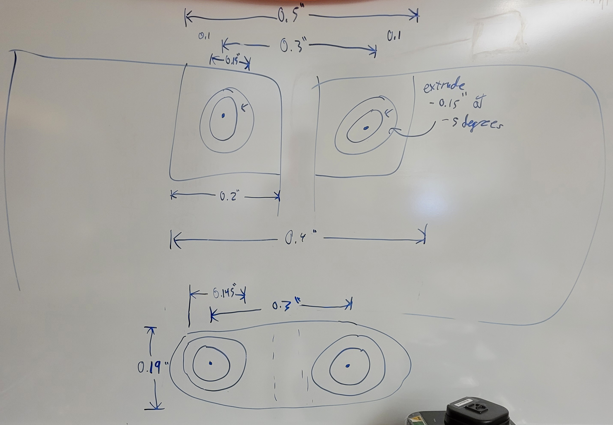
This is an image that shows our first design of the infinitely folding cube, mainly illustrating the joints and how
they should work. The measurements were slightly tweaked in our final product.
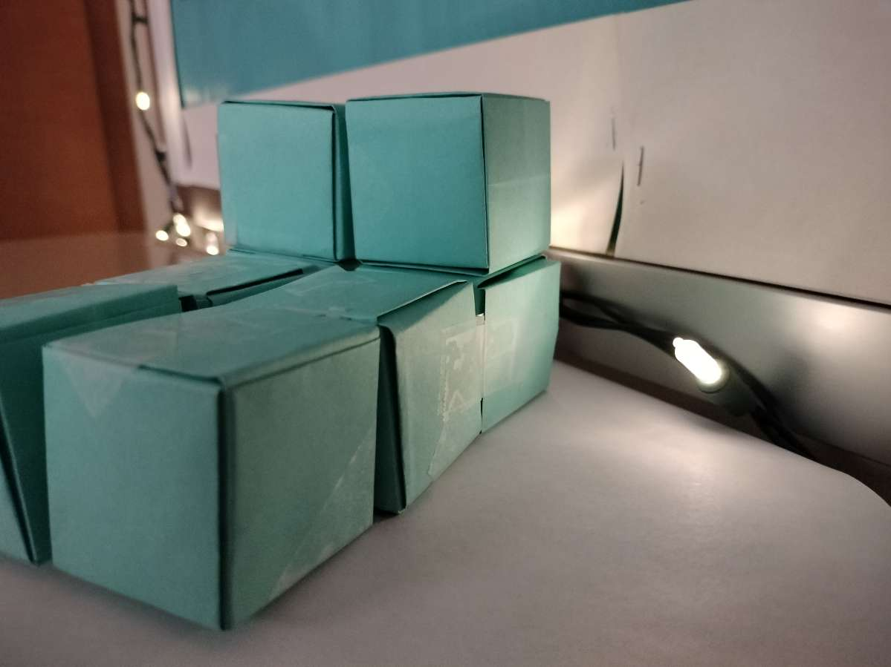
This image is a concept of the Infinitely Folding Cube fashioned out of oragami. The oragami infinity cube was used as a basis for
how we wanted the 3d printed infinity cube to work.
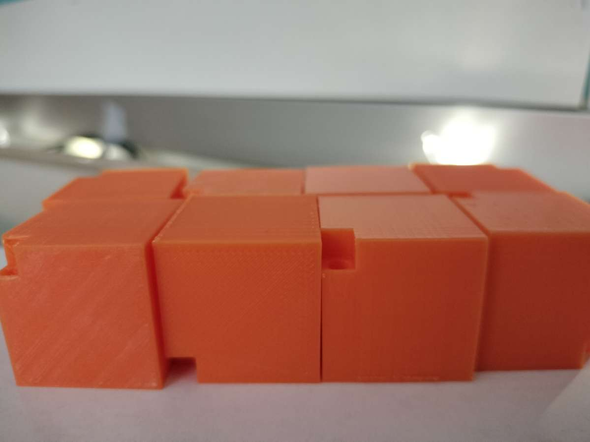
This image shows the cubes that we first designed to use to create the Inifinitely Folding Cube. In this image, our joints were
very rudimentary in design as we were just figuring out how to create joints and attatch them to specific parts of an object.
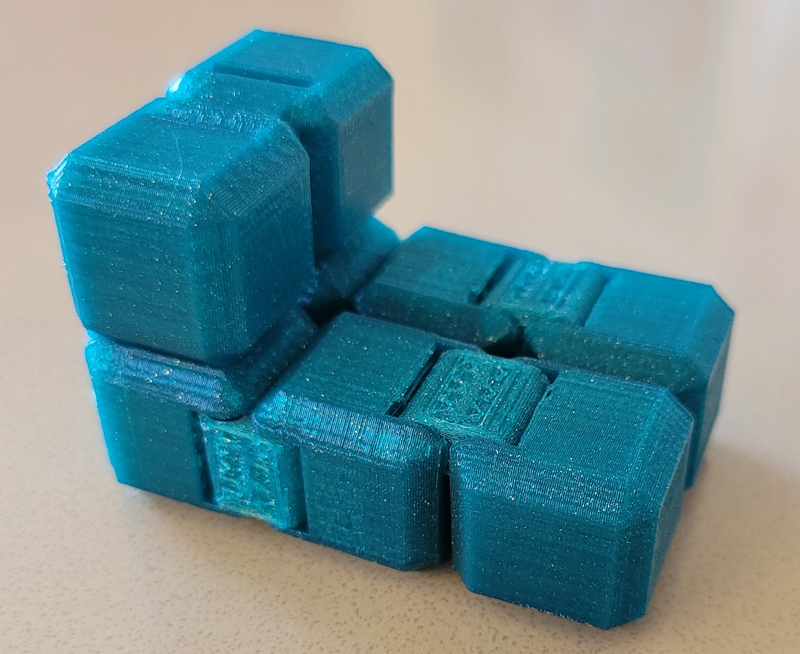
This image is a second/final draft of the fidget cube, as the original was unweildy in size and the cubes did not connect nearly as well as we hoped.
We completely overhauled the joints in this draft and rounded out the corners of the cube in order for the cube to be much nicer to hold in your hand.
Spinny Gear
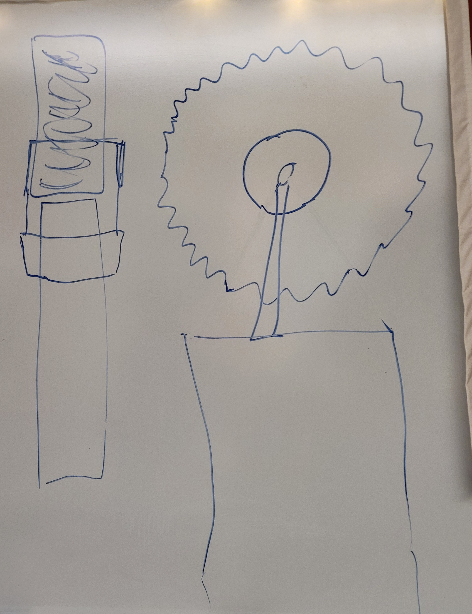
This image illustrates how we decided to illustrate the spinny gear. This design was very barebones, as it was simply a brainstorm piece. We
did end up keeping some of the ideas in this illustration to use in the final design.
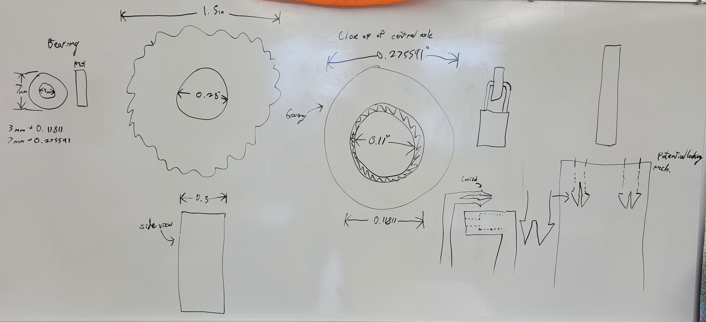
This image illustrates our revised version of the spinny gear, now with a lot more information. We added dimensions as well as more sketches
from different angles. We ended up sticking with this design throughout the rest of the design process.
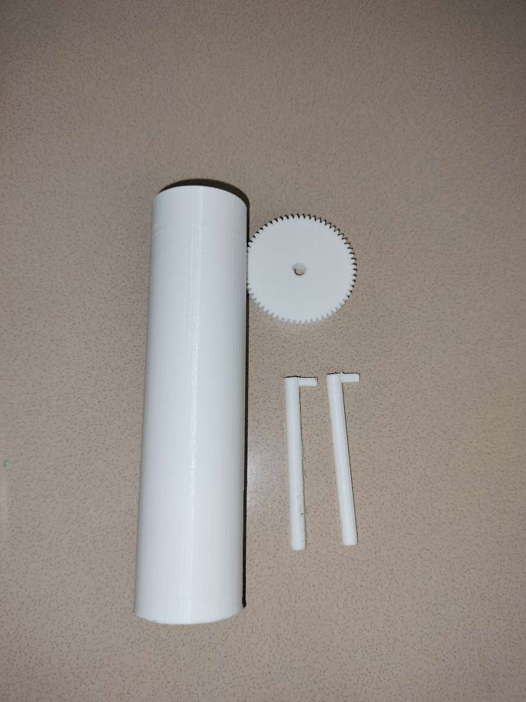
This is our first draft of the spinner fidget, currently taken apart to better show all of the pieces that go into creating it.
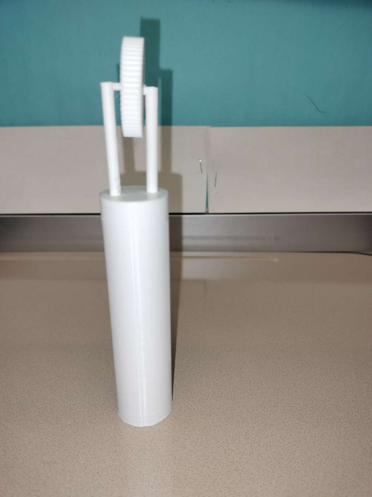
This is our first draft of the spinner fidget, currently assembled. This is our very first draft print of the spinny gear.
There were still a few kinks to work out, such as the rough edges and the rather thin gear piece.
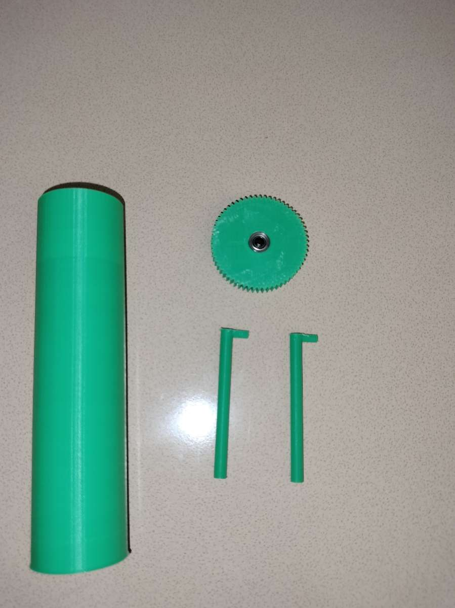
This is our second draft of the spinner fidget, currently taken apart. All of the same essential parts from the first draft were kept,
modified only slightly if need be.
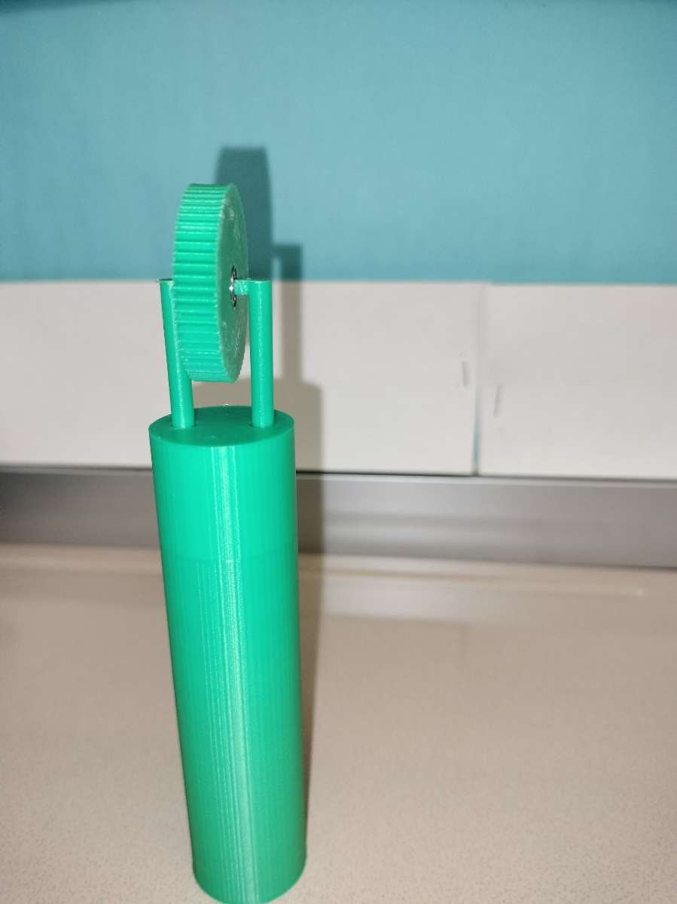
This is our second draft of the spinner fidget, currently assembled. This is the design we ultimately chose to go with.
Texture Strips
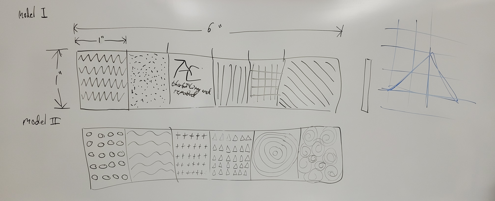
This image illustrates how we decided to illustrate the texture strip. We decided to go with two joint connected rectangles,
each with six different textures. The triangle sketch off to the right side was an illustration that one of our group members did that
illustrates how fusion 360 likes to connect lines.
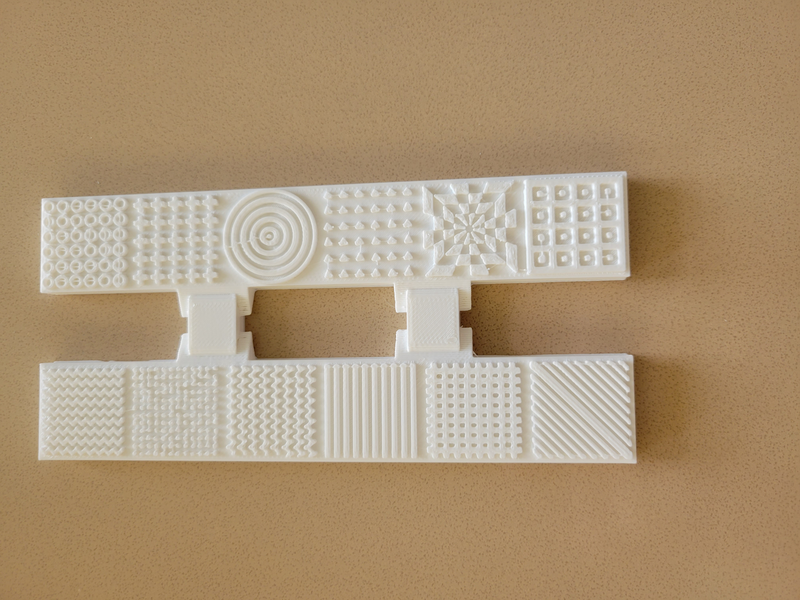
This is our first printed draft of the texture strip. The joints weren't connected nearly as nicely as those in the infinity cube,
but other than that, the texture strip worked exactly as we intended. The joints would still need to be worked on, though.
This video demostrates how the hinges work on the texture strip. We modified those hinges and upgraded them from the ones on the infinity cube.